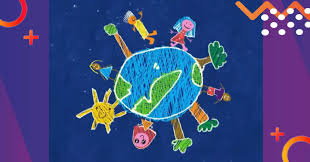

.jpg)
VENTAJAS
Garantiza la supervivencia humana y de las especies al preservar recursos vitales como aire limpio, agua potable y alimentos. Reduce la contaminación y riesgos de enfermedades, mitiga el cambio climático, protege la biodiversidad y asegura un planeta habitable para generaciones futuras, mejorando la calidad de vida general.
También ayuda a conservar los recursos naturales, como el agua, los bosques y el aire puro, que son indispensables para la vida.
Otra ventaja es que protege a los animales y plantas, manteniendo el equilibrio de los ecosistemas.
Además, al reciclar y ahorrar energía, podemos reducir gastos y aprovechar mejor los recursos.
Cuidar el medio ambiente es fundamental para garantizar la supervivencia y el bienestar de los seres vivos, permitiendo disfrutar de recursos naturales esenciales. Las acciones en favor del planeta no solo protegen la biodiversidad, sino que mejoran directamente nuestra calidad de vida al reducir la contaminación y promover un entorno más saludable.
Aquí tienes las principales ventajas y más información detallada:
Ventajas de Cuidar el Planeta
Mejor Calidad de Vida y Salud: Un entorno limpio reduce la contaminación del aire, agua y suelo, disminuyendo enfermedades respiratorias y de transmisión hídrica.
Conservación de Recursos y Ecosistemas: Ayuda a proteger áreas naturales, especies en peligro de extinción y asegura el suministro futuro de agua, alimentos y oxígeno.
Reducción del Cambio Climático: Acciones como ahorrar energía y reducir emisiones disminuyen el impacto del calentamiento global.
Impulso de la Economía Circular: El reciclaje y la reutilización generan empleos, disminuyen la cantidad de desechos en vertederos y reducen la necesidad de explotar nuevos recursos naturales.
.jpg)
Beneficios Mentales: Estar en contacto con la naturaleza ayuda a la relajación y mejora la salud mental.
Acciones Prácticas para Cuidar el Planeta
Práctica las 3R: Reducir el consumo de plásticos y productos contaminantes, Reutilizar objetos (como donar ropa) y Reciclar materiales como vidrio, papel y metales.
Ahorro de Recursos: Apagar luces, usar transporte sostenible y ahorrar agua cerrando el grifo al cepillarse los dientes.
Movilidad Sostenible: Optar por caminar, usar bicicleta o transporte público en lugar del auto particular.

Consumo Responsable: Elegir alimentos vegetales y evitar desperdiciar comida.
.jpg)
Cuidado de los Árboles: Plantar y cuidar árboles, ya que producen oxígeno, limpian el aire y regulan la temperatura.
.jpg)
¿Por qué es Urgente Actuar?
El planeta enfrenta peligros graves como la contaminación masiva (una bolsa de plástico tarda más de 150 años en degradarse), la deforestación y la pérdida de biodiversidad. Cada persona genera aproximadamente 1 kg de basura al día, lo que subraya la necesidad de un cambio de hábitos inmediato.
Cuidar el medio ambiente es una responsabilidad compartida que garantiza un futuro digno y seguro para las próximas generaciones.
Salud Humana y Bienestar: La reducción de lacontaminación del aire y agua disminuye enfermedades respiratorias y cardiovasculares. Un entorno limpio mejora la calidad de vida y bienestar físico y mental.
Sostenibilidad de Recursos: El reciclaje y la gestión de residuos conservan recursos naturales limitados y reducen la necesidad de extraer materias primas
.
Equilibrio Ecológico y Biodiversidad: Protege hábitats naturales, asegurando la supervivencia de especies animales y vegetales, lo que mantiene los ecosistemas funcionales y resilientes.
Mitigación del Cambio Climático: Acciones como el uso eficiente de energía y la reducción de combustibles fósiles disminuyen las emisiones de gases de efecto invernadero, regulando el clima y reduciendo desastres naturales.
Beneficios Económicos: La gestión sostenible de recursos fomenta el empleo y puede reducir costos operativos al maximizar la eficiencia energética y de materiales.
.jpg)
| MENU | ANTERIOR | SIGUIENTE | INICIO |